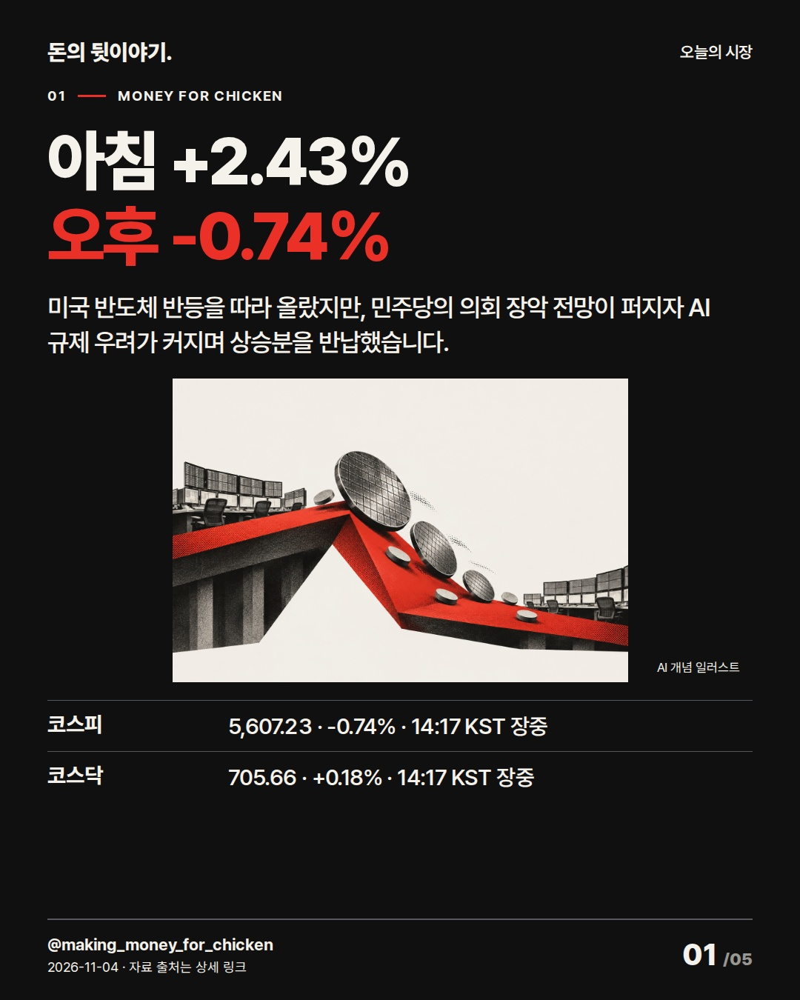
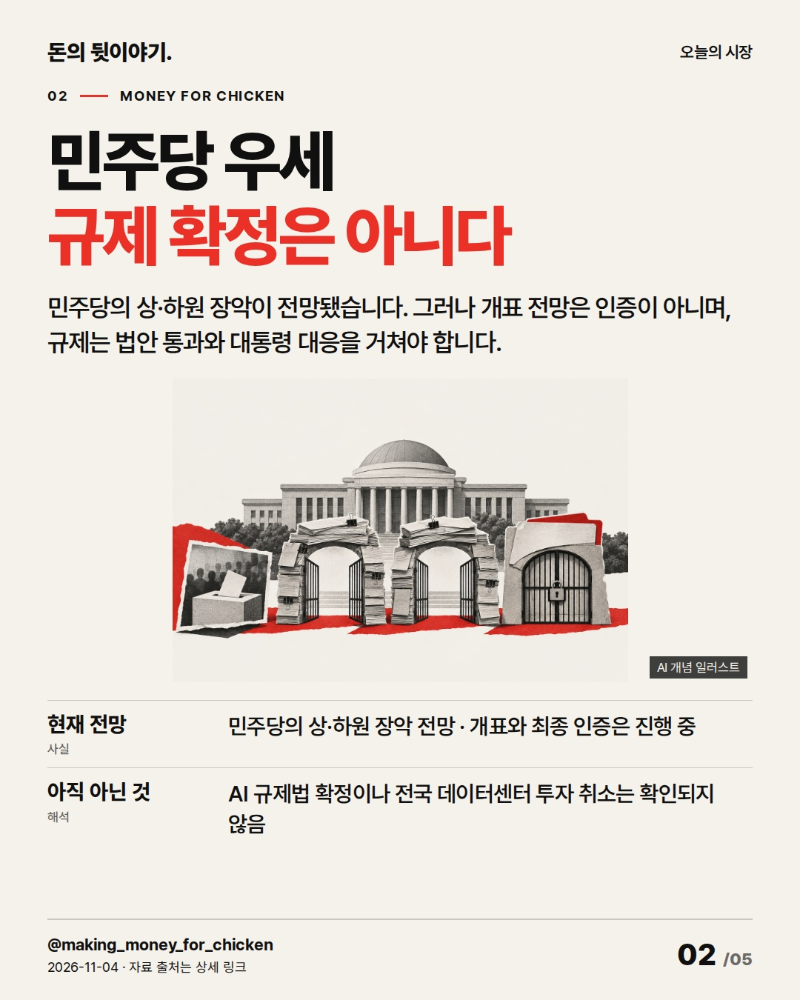
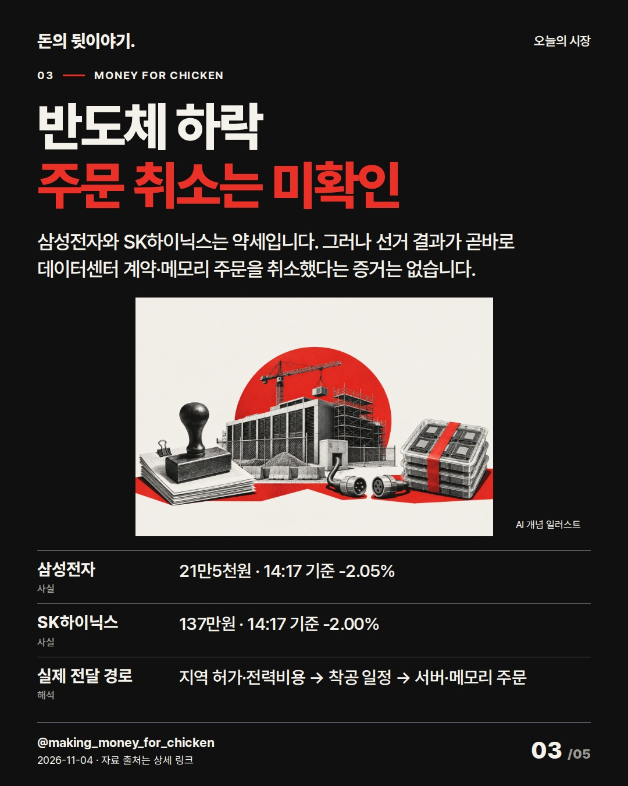
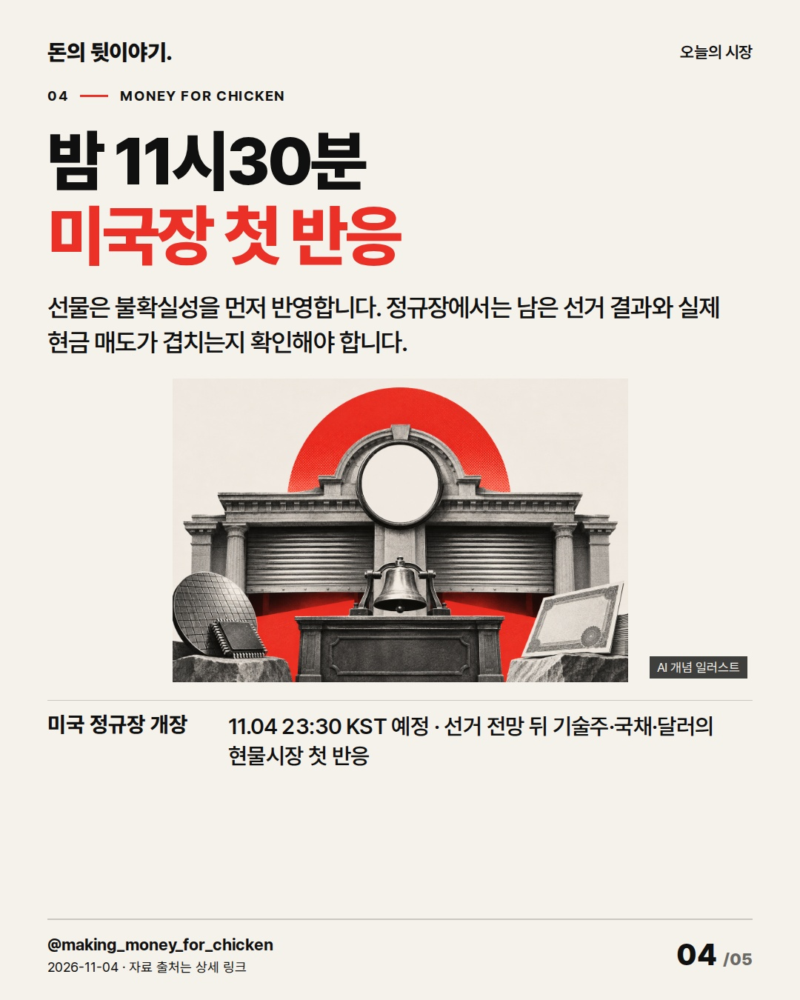
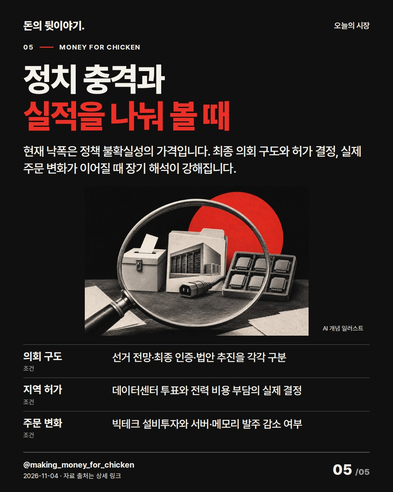

코스피는 2.43% 상승 출발했지만 오후 2시 17분 0.74% 하락으로 뒤집혔습니다. 민주당 우세 전망과 실제 AI 규제·데이터센터 주문 사이에는 아직 절차와 시간이 남아 있습니다. #코스피 #미국중간선거 #반도체

미국 반도체 반등을 따라 올랐지만, 민주당의 의회 장악 전망이 퍼지자 AI 규제 우려가 커지며 상승분을 반납했습니다.
AI 생성 개념 일러스트 · 실제 현장이나 공식 제품 사진이 아닙니다.

민주당의 상·하원 장악이 전망됐습니다. 그러나 개표 전망은 인증이 아니며, 규제는 법안 통과와 대통령 대응을 거쳐야 합니다.
AI 생성 개념 일러스트 · 실제 현장이나 공식 제품 사진이 아닙니다.

삼성전자와 SK하이닉스는 약세입니다. 그러나 선거 결과가 곧바로 데이터센터 계약·메모리 주문을 취소했다는 증거는 없습니다.
AI 생성 개념 일러스트 · 실제 현장이나 공식 제품 사진이 아닙니다.

선물은 불확실성을 먼저 반영합니다. 정규장에서는 남은 선거 결과와 실제 현금 매도가 겹치는지 확인해야 합니다.
AI 생성 개념 일러스트 · 실제 현장이나 공식 제품 사진이 아닙니다.

현재 낙폭은 정책 불확실성의 가격입니다. 최종 의회 구도와 허가 결정, 실제 주문 변화가 이어질 때 장기 해석이 강해집니다.
AI 생성 개념 일러스트 · 실제 현장이나 공식 제품 사진이 아닙니다.
{
"improvement": "최근 5편(AMD·11/2·10/30 시장·INTC·MSFT)은 기업 숫자와 주문 경로가 중심이었습니다. 이번에는 장 초반 +2.43%→오후 -0.74%를 보여준 뒤, 선거 전망과 실제 매출 사이에 의회·허가·착공 절차가 있음을 한 축으로 설명했습니다.",
"reason": "불스토리 공식 글 본문 전체는 선거→법·예산→지역 허가→기업 주문의 시간차와 비용 부담 주체를 나눴습니다. 홍춘욱 공식 글 전체는 AI 성장·투자 사이클·가격 기대를 구분했습니다. Morning Brew 11/3 글 전체는 의회 결과와 40개 넘는 지역 투표를 분리했고, Bloomberg는 검색 공개 제목·요약만 확인했으며 본문·Instagram 카드는 열람하지 못했습니다.",
"application": "초안 ‘민주당 압승에 반도체 급락’→퇴고 ‘아침 +2.43%, 오후 -0.74%’로 바꿨습니다. 첫 preview에서 2장 과밀을 확인해 선물·금리 행을 덜고 전망·확정 두 행만 남겼습니다. 3장에는 지역 허가·전력비용→착공→서버·메모리 주문 연결을 넣었습니다.",
"avoided_repetition": "11/2의 수출·반도체 수요, 10/30의 빅테크 투자 회수, 오늘 AMD의 마진 계산은 반복하지 않았습니다. ‘불확실성 확대’ 같은 추상어와 같은 결론 반복을 덜고, 4장은 미국장 첫 현물 반응, 5장은 의회 구도·지역 허가·실제 주문이라는 서로 다른 확인 기준으로 끝냈습니다. 반응 지표는 미확보이며 다음 편은 정책 발표 뒤 실제 발주 변화까지 비교합니다."
}투자 참고용 · 매수·매도 권유 아님.